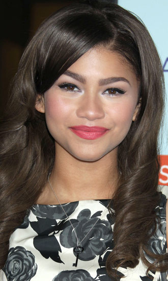

Zendaya Quiz
What is Zendaya's last name?
Zendaya's last name is Coleman.
What does Zendaya call her eyebrows?
Zendaya calls her eyebrows "browfaction".
What is Zendaya's dog's name?
Zendaya's dog's name is Midnight.
What was Zendaya's first play that she was in?
Zendaya's first play that she was in is one of the Witches in Macbeth.

Click to see all answers.